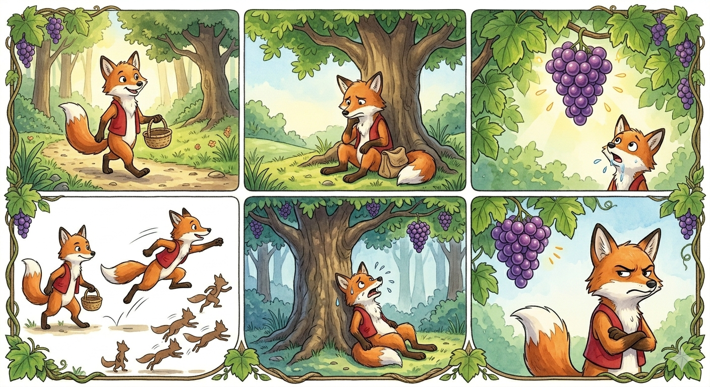

One fine and sunny day a fox was strolling along minding his own foxy business. He thought he might sit down under a shady tree and have some lunch, as he was a bit thirsty and hungry. Then he realised he’d left his lovely packed lunch at home. "Oh, you foolish fox!” he said to himself. But just then he looked up and what should he see but the most delicious-looking bunch of purple grapes he’d ever seen in his whole foxy life. They were just sitting there; hanging from a grapevine that ran along the branches of a tree. The grapes looked like they were about to burst with the tastiest juice and the fox’s mouth began to water. “Oh, I’ve got to have these, just got to!” he muttered to himself, “I shall fill my foxy face with them!” The bunch of grapes hung from a very high branch so the fox jumped up to reach it. He hadn’t jumped high enough and missed it by a long way. So he walked back a little way and took a running leap. Up he went but not high enough and his paw missed the grapes. He kept jumping and jumping but every single time he missed. Now he was hot and tired and thirsty and hungry and cross. He sat down under the tree and looked up at the grapes in disgust. "What a foxy fool I am," he muttered. "What am I doing wearing myself out jumping up and down on a hot day like this just to get hold of a bunch of horrible old sour grapes?" So, he got up, made a cross face and off he went. And the moral of the story is that sometimes people pretend to dislike things they can’t have. Oh, and did you know that this is where the phrase ‘sour grapes’ comes from?